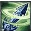

灵风
简介
灵风这件装备在这几件冷门中相对来说算是热门了，因为还是有不少英雄需要它的。比如刀妹和薇恩都可以出灵风，两个都是非常需要攻速和移速的英雄，灵风正好可以满足这点需求。但这都不是重点，重点在于被动提供的韧性，大家都知道刀妹本身就要韧性，即减少各种控制技能时间。
灵风这件装备在这几件冷门中相对来说算是热门了，因为还是有不少英雄需要它的。比如刀妹和薇恩都可以出灵风，两个都是非常需要攻速和移速的英雄，灵风正好可以满足这点需求。但这都不是重点，重点在于被动提供的韧性，大家都知道刀妹本身就要韧性，即减少各种控制技能时间。